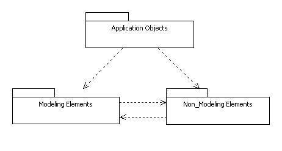
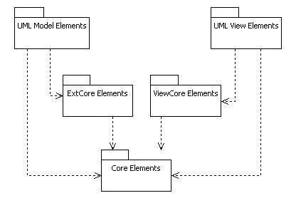
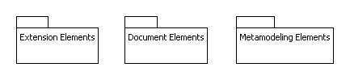

Chapter 2. StarUML Architecture
This chapter discusses the basic architecture of StarUML™. It mainly
describes the structures of the platform architecture, Add-Ins, and external
API.
Platform Architecture
StarUML™ is an extensible software modeling platform; it does not just
provide pre-defined functions but allows addition of new functions. The diagram
below illustrates the architecture of StarUML™. Blue indicates the platform and
green the extensible parts. The extensible parts can be developed by the user or
a third party and then added to the platform for integration.

- Approach: Approach defines the model of the
project and basic organization of the diagrams. For details on approach, see
"Chapter 5. Writing Approaches".
- UML Profile & Notation Extension : UML Profile allows extension of
expression for the software model through the extension mechanism of UML.
For details on UML profile, see "Chapter 7. Writing UML
Profiles" and "Chapter 10. Extending Notation"
- Model Framework: Model Framework makes software models reusable
and allows them to be used when defining other software models. For details
on model framework, see "Chapter
6.
Writing Frameworks".
- Add-In COM Object: Add-In COM allows addition of new
functionality to StarUML™. For details on Add-In COM objects, see "Chapter
9. Writing Add-In COM Object".
- Menu Extension: The StarUML™ application menu
(main menu and pop-up menu) can be added by the user. For details on menu
extension, see "Chapter 8. Extending Menu".
- Option Extension: The StarUML™ option items can be added by the
user. For details on option extension, see
"Chapter 9. Writing Add-in COM Object".
- Event Subscription: Various events occurring in StarUML™ can be
subscribed to. For details on subscribing to events, see "Chapter 9. Writing Add-in COM Object".
- External API: The external API from StarUML™ allows access to
various functionalities and information. Details on API are discussed
throughout this developer guide, and the example included in StarUML™
installation 'StarUML Application Model.uml' provides a good
illustration. See "Appendix A.
Plastic Application Model."
Organizing a Module
Module is a software package which allows addition of new functionalities and
features by extending StarUML™. Module consists of various extension mechanisms
of StarUML™. As illustrated in the diagram below, an Add-In package can consist
of various approaches, various model frameworks, various UML profiles, various
scripts, menu extensions, option extensions, help, and Add-In COM Objects.

Application of Modules
Modules can contain various elements, it can be developed for different
purposes. Modules can be used for supporting specific processes, languages or
platforms, integrating with other tools, or extending functions.
- Support for Specific Processes: UML Components, RUP, Catalysis,
XP, ...
- Support for Specific Programming Languages: C/C++, Python, C#,
Visual Basic, Java, Perl, Object Pascal, ...
- Integration with Specific Tools: Visual SourceSafe, CVS, MS Word,
Eclipse, Visual Studio.NET, ...
- Extension of Other Functionalities: Traceability Manager, Design
Patterns Support, Rule Checking, ...
- Building Individual (or Enterprise) Specific Environment
Elements of Module
- Approach: Approach is applied in the beginning of the project to
determine the initial model structure. For example, when making an Add-In
for a specific process, approach can be used to pre-define the structure
which manages the models produced at each stage of the process.
- Model Framework: When developing a module related to specific
languages or platforms, model framework can produce Class Library or
Application Framework. Other basic services (e.g. Event, Transaction,
Security, Directory, ...) can also be developed and added as models.
- UML Profile: UML Profile can be defined to extend expression of
UML for specific processes, languages or frameworks, or to use additional
properties. This has a global effect in the module.
- Menu Extension: Menu Extension is used to add most of the new
functionality in Add-In, and to extend the main menu or pop-up menu to allow
the user to select and run the functions. This is a critical element in
Add-In development.
- Option Extension: Add-In itself can have various selection items.
Utilizing them allows use of option dialogs in StarUML™ as option items.
- Add-In COM Object: Extensible functionalities can be created
using languages and tools like Visual Basic, Delphi, Visual C++, and C#. In
general, COM objects are used for additional GUI or complex functionalities,
and Scripts are used for simple functionalities. This is usually programmed
through external API.
- Script: Simple functionality extension can be done by using
Scripting Languages (JScript, VBScript, Python, ...). This is usually
programmed through external API.
- Help: Help for Add-In can be created as HTML and registered with
local or remote path.
Open API Overview
StarUML™ provides a wide array of API (Application
Programming Interface). The external API of StarUML™
is a standardized programming interface that allows use of the internal program
functionalities from outside.
As illustrated in the diagram below, the external API of StarUML™ can be
divided into three main parts: Modeling Elements, Non_Modeling
Elements and Application Objects. The Modeling Elements part
provides an interface for access to modeling elements, and the Non_Modeling
Elements part provides an interface for MOF (Meta-Object Facility) and
various elements other than modeling elements. The Application Objects
part provides various interfaces which manage the application itself.

The Application Objects Part
The Application Objects part includes interfaces which manage the
application itself. The interfaces included in this part are
IStarUMLApplication as the basic interface, ISelectionManager for
managing element selection, IUMLFactory for creating elements,
IProjectManager for managing projects, and interfaces related to events and
GUI.
The Modeling Elements Part
The Modeling Elements part includes interfaces for managing modeling
elements. This part can be further divided into many parts. The Core Elements
part defines the top interface of model, view, and diagram elements. The
ExtCore Elements part includes interfaces for extensible model elements, and
the UML Model Elements part defines the UML modeling elements based on
the ExtCore Elements. The ViewCore Elements part includes interfaces for
basic components of view elements, and the UML View Elements part also
defines the UML view elements based on the ViewCore Elements.

The Non_Modeling Elements Part
The Non_Modeling Elements part includes interfaces for elements other
than modeling elements. This part can be further divided into many parts: the
Extension Elements part which includes interfaces for elements related to
the UML extension mechanism, the Document Elements part which manages StarUML™¡¯s
saved files, and the Metamodeling Elements part which manages meta-level
elements.
